Volume and Scale I
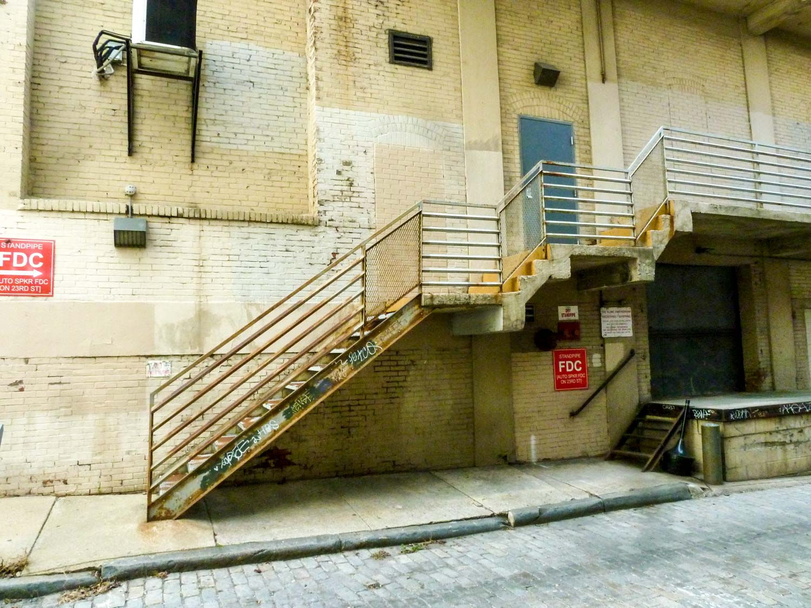I've been interested in photography for as long as I can remember, but I never had the chance to get into it until recently. I love photography because it allows me to capture the moments that I love and hold them in time forever. My favorite thing to take pictures of is people. I love capturing genuine emotions and expressions, and honestly just having fun with the camera.
Volume and Scale I
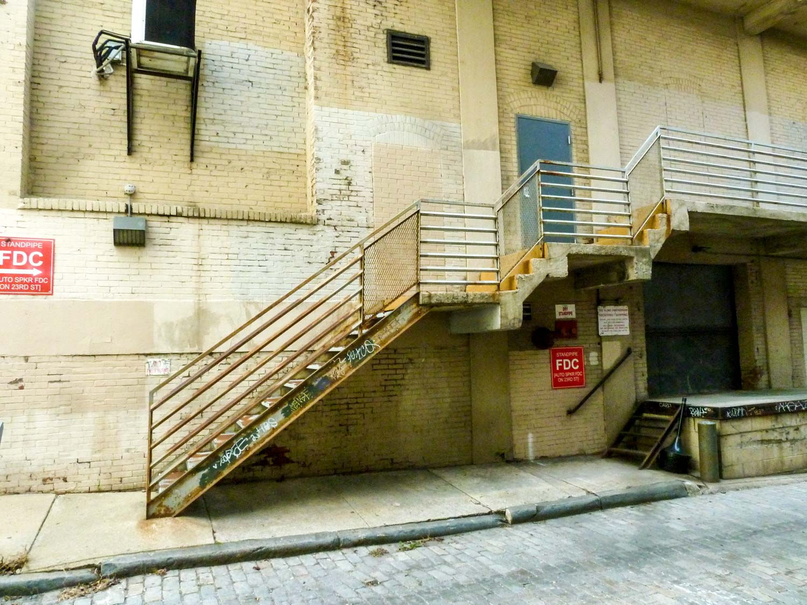Volume and Scale II
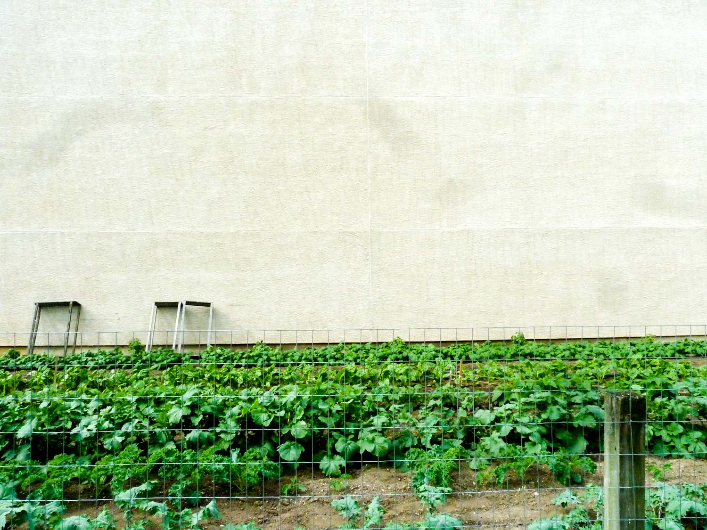Volume and Scale/Black and White I
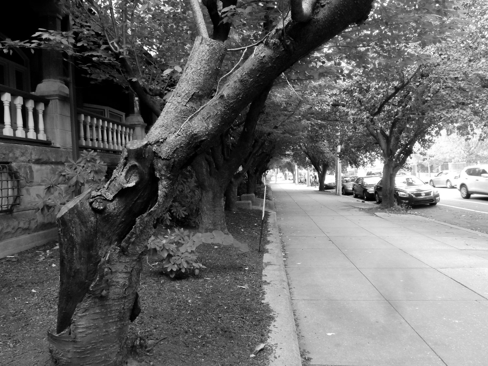Volume and Scale/Black and White II
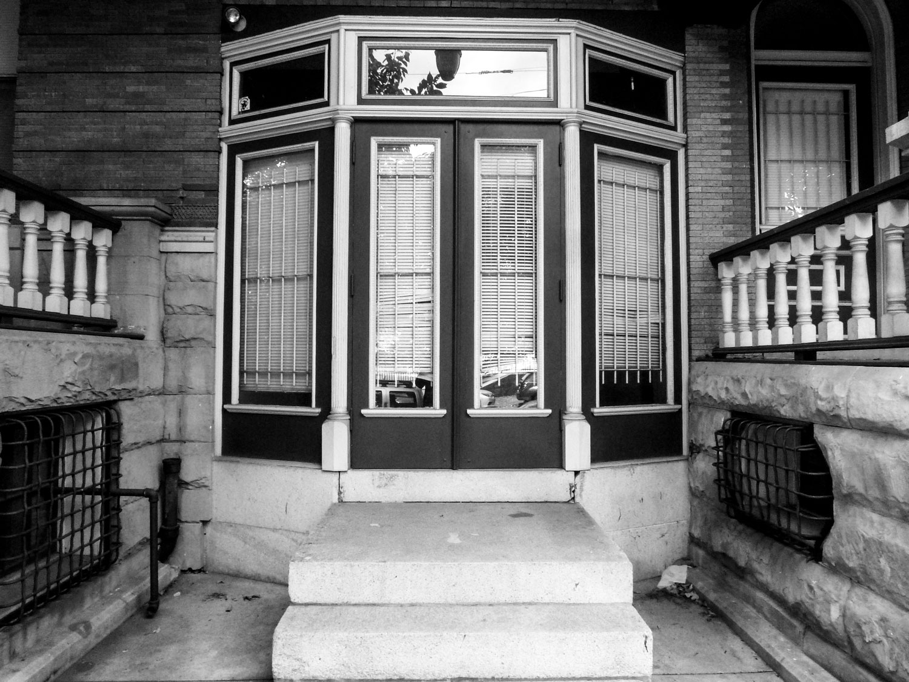Portrait I
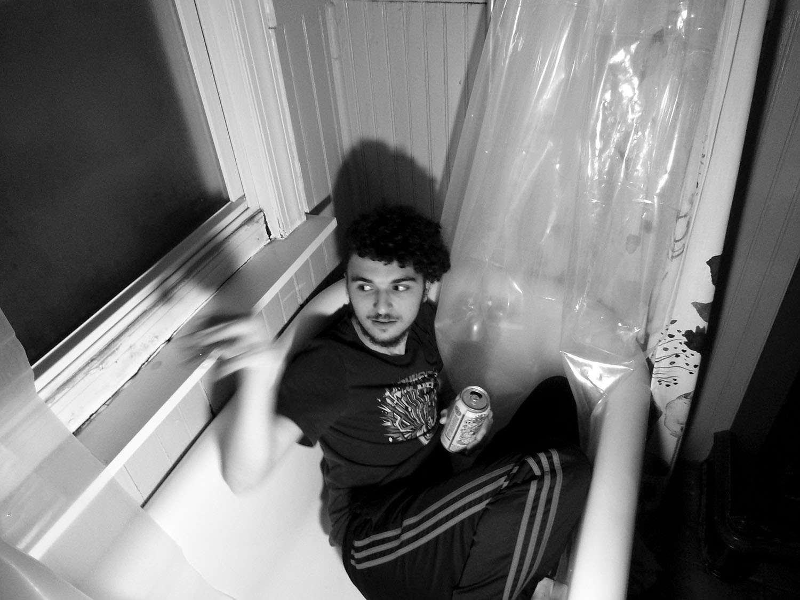Portrait II
Portrait III
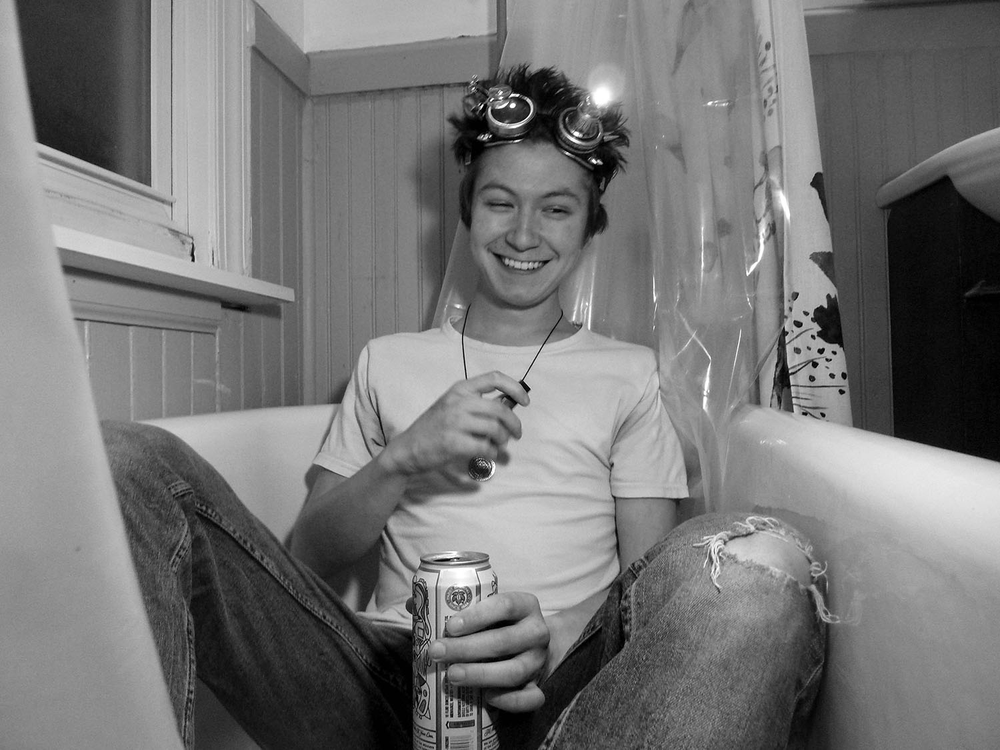Street Photo I
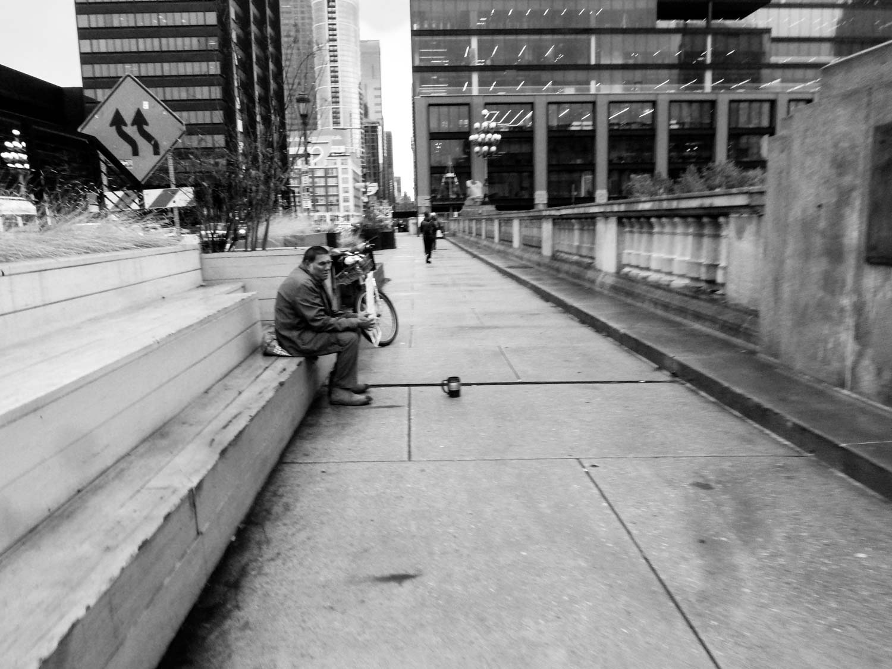Street Photo II
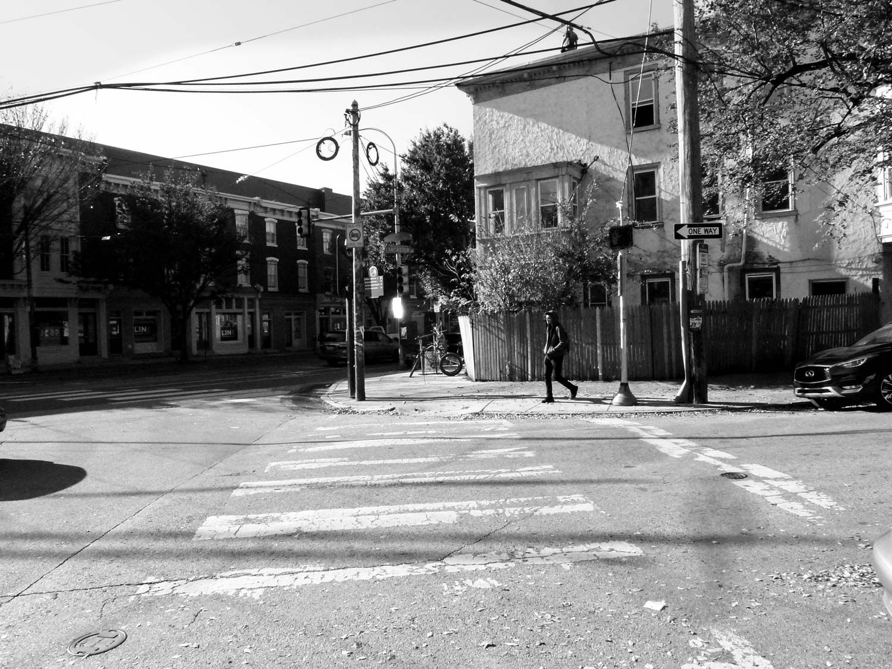Street Photo III
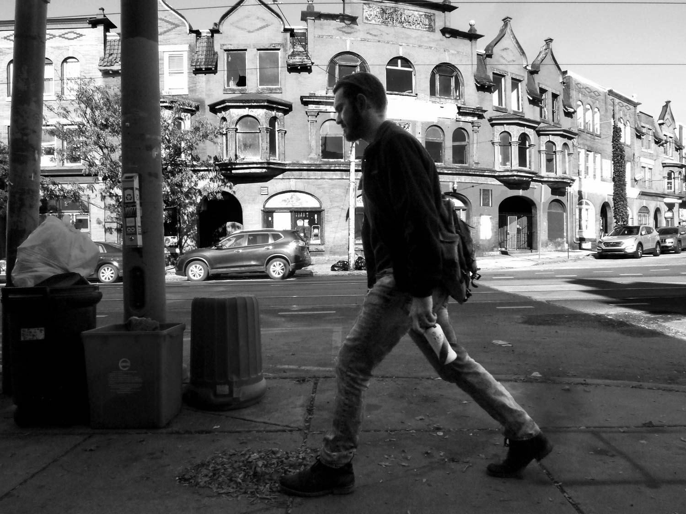Organic I
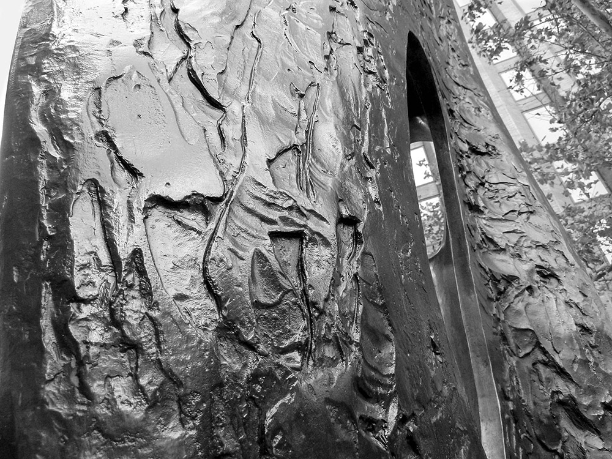Organic II
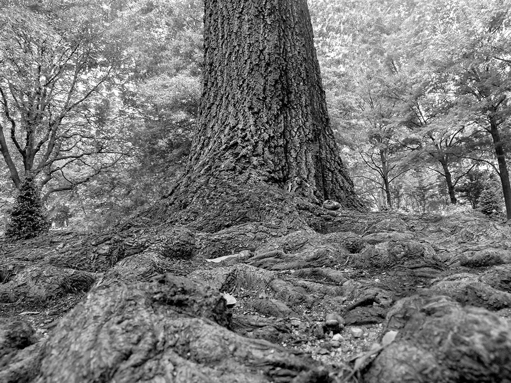